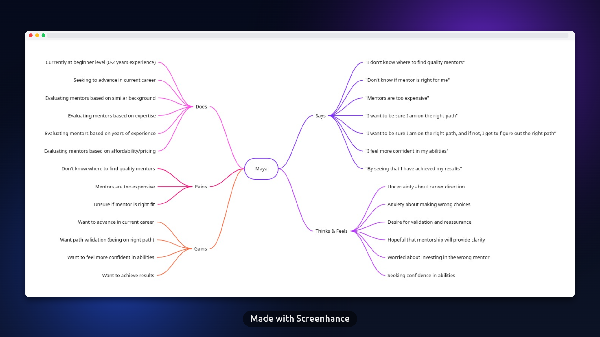
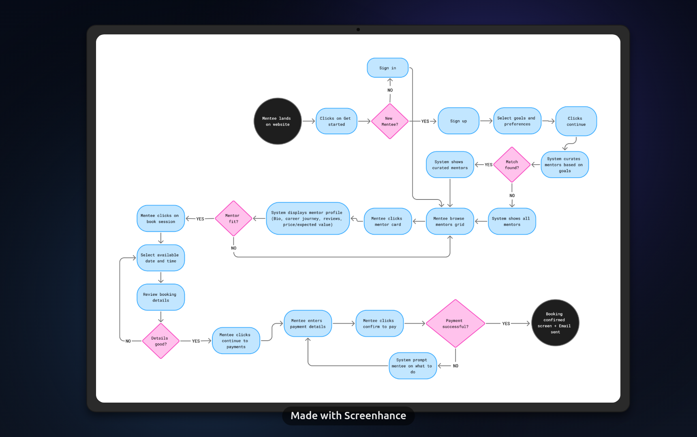
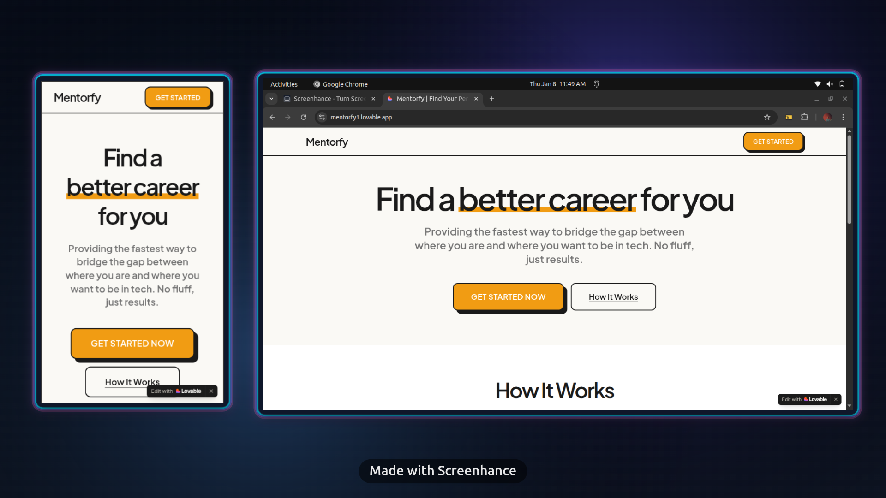
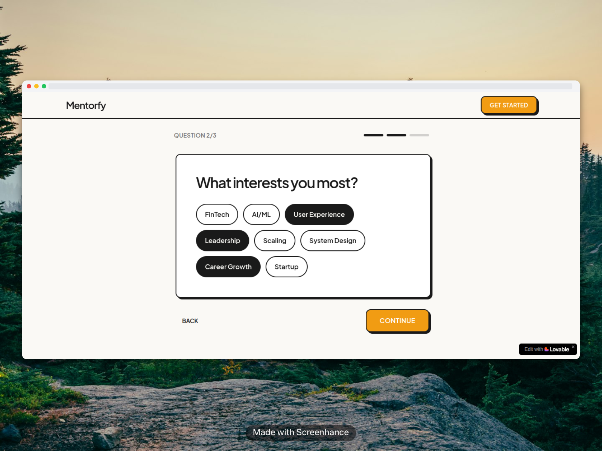

Mentorfy
Connecting mentees with the right mentor—not just any mentor
Role: Product Manager
Context: EdTech · 2025
Context
I designed a new mentor discovery flow for Mentorfy, a mentorship platform connecting mentees with mentors across different skills, industries, and career stages. The core problem: new mentees struggle to find mentors that match their learning goals quickly, leading to frustration and lower engagement.
Problem
Mentees couldn't easily find relevant mentors or explore profiles effectively. The existing flow didn't help users articulate what they needed, making it hard to connect with the right mentor and book sessions smoothly.
What I Did
⦁ Sent out a survey and analyzed responses alongside Mentorfy's internal data to understand user behavior and pain points.
⦁ Developed user stories revealing key needs: early-career professionals wanted guided matching instead of figuring it out alone, mentees needed to see credentials and career trajectories to build trust, and cost-conscious users wanted transparent pricing and expected outcomes.
⦁ Built an empathy map from the combined data to identify mentee decision-making patterns and friction points.
⦁ Designed a user flow mapping the journey from goal clarification to mentor booking, with possible edge cases.
Solution
The prototype delivered a three-step flow, guided onboarding to clarify mentee needs, curated matches with detailed profiles showing career paths of mentors, verified expertise, cost transparency, and streamlined booking. This addressed all objectives—helping mentees find relevant mentors easily, explore profiles effectively, and book sessions smoothly.
 
Key Learning
Proper research and data analysis made solving complex user problems straightforward. The survey responses and empathy map revealed specific pain points I wouldn't have assumed, like the need for expertise and reviews over endless browsing options. When you invest in understanding the problem deeply, the solution becomes clear and you avoid designing for assumptions.